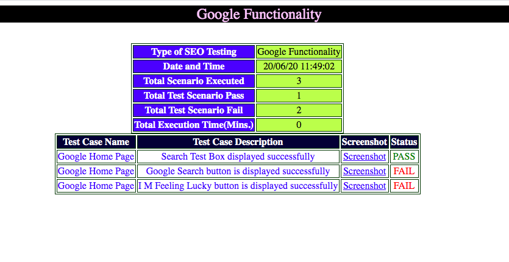
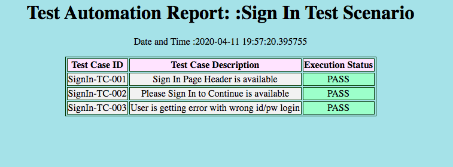

Create HTML Report using Java with below features:
We will be using Java StringBuilder to create HTML Test Report.

As per above screenshot we can say :
Report has Date and Time
Total Test Case count
Total PASS count
Total FAIL count
Total Execution Time in Minutes
Test Case Name , Description , Screenshot , Status.
By clicking on screenshot link would navigate to actual screenshot.
Code to get Date and Time
// Test Method to read Date AND Time.
public static String dateNTime()
{
DateFormat df = new SimpleDateFormat("dd/MM/yy HH:mm:ss");
Calendar calobj = Calendar.getInstance();
//System.out.println(df.format(calobj.getTime()));
return df.format(calobj.getTime());
}
Code to capture PASS status
// Test report creation when test is Pass
public static void TestStepPass(String testname , String testdescription)
{
passcount = passcount+1;
String screenshot_path = captureScreenshot(driver , "PASS");
try{
STBuilder.append("<tr><td bgcolor=#FFFFFF style=text-align:center>"+textcolor(testname,"blue")+"</td>");
STBuilder.append("<td bgcolor=#FFFFFF style=text-align:center>"+textcolor(testdescription,"blue")+"</td>");
STBuilder.append("<td bgcolor=#FFFFFF style=text-align:center><a href="+screenshot_path+">"+textcolor("Screenshot","Blue")+"</a></td>");
STBuilder.append("<td bgcolor=#FFFFFF style=text-align:center>"+textcolor("PASS","GREEN")+"</td></tr>");
}
catch(Exception e){
System.out.println("Unable to create PASS Test Report");
}
}
Code to capture FAIL status
// Test report creation when test is Fail
public static void TestStepFail(String testname , String testdescription)
{
String screenshot_path = captureScreenshot(driver , "FAIL");
failcount = failcount+1;
try{
STBuilder.append("<tr><td bgcolor=#FFFFFF style=text-align:center>"+textcolor(testname,"blue")+"</td>");
STBuilder.append("<td bgcolor=#FFFFFF style=text-align:center>"+textcolor(testdescription,"blue")+"</td>");
STBuilder.append("<td bgcolor=#FFFFFF style=text-align:center><a href="+screenshot_path+">"+textcolor("Screenshot","Blue")+"</a></td>");
STBuilder.append("<td bgcolor=#FFFFFF style=text-align:center>"+textcolor("FAIL","Red")+"</td></tr>");
}
catch(Exception e){
System.out.println("Unable to create Fail Test Report");
}
}
Code For HTML Text Color
/**
* Method which can Change color of HTML Text
* @param text
* @param colorOfText
* @return
*/
public static String textcolor(String text , String colorOfText)
{
StringBuilder s = new StringBuilder();
s.append(String.format("<font color=\"%s\">%s</font>",colorOfText,text));
String output = s.toString();
return output;
}
This Method is useful to Create Final Test Report
/**
* This Method is useful to Create Final Test Report
*/
public static String createFinalTable(String tableBody , String functionality)
{
return
"<html><head><p></p></head>"
+ "<body>"
+"<marquee width=100% bgcolor=#000000><font size=5 color=#FFCCFF>"+functionality+"</font></marquee>"
+ "<p></title </p><background color=\"#RRGGBB\">"
+ "<background color=\"#003300\"> </background>"
+ "<table border=\"1\" bordercolor=\"#003300\" align=\"center\">"
+"<tr><td bgcolor=#3333ff style=text-align:center><b>"+textcolor("Type of SEO Testing","white")+"</b></td><td bgcolor=#ccff66 style=text-align:center>"+functionality+"</td></tr>"
+"<tr><td bgcolor=#3333ff style=text-align:center><b>"+textcolor("Date and Time","white")+"</b></td><td bgcolor=#ccff66 style=text-align:center>"+dateNTime()+"</td></tr>"
+"<tr><td bgcolor=#3333ff style=text-align:center><b>"+textcolor("Total Scenario Executed","white")+"</b></td><td bgcolor=#ccff66 style=text-align:center>"+String.valueOf(passcount+failcount)+"</td></tr>"
+"<tr><td bgcolor=#3333ff style=text-align:center><b>"+textcolor("Total Test Scenario Pass","white")+"</b></td><td bgcolor=#ccff66 style=text-align:center>"+String.valueOf(passcount)+"</td></tr>"
+"<tr><td bgcolor=#3333ff style=text-align:center><b>"+textcolor("Total Test Scenario Fail","white")+"</b></td><td bgcolor=#ccff66 style=text-align:center>"+String.valueOf(failcount)+"</td></tr>"
+"<tr><td bgcolor=#3333ff style=text-align:center><b>"+textcolor("Total Execution Time(Mins.)","white")+"</b></td><td bgcolor=#ccff66 style=text-align:center>"+String.valueOf(actualExecutionTime)+"</td></tr>"
+"</table>"
+ "<table border=\"1\" bordercolor=\"#003300\" align=\"center\">"
+ "<tr>"
+ "<td bgcolor=#000033 style=text-align:center><b>"+textcolor("Test Case Name","white")+"</b></td>"
+ "<td bgcolor=#000033 style=text-align:center><b>"+textcolor("Test Case Description","white")+"</b></td>"
+ "<td bgcolor=#000033 style=text-align:center><b>"+textcolor("Screenshot","white")+"</b></td>"
+ "<td bgcolor=#000033 style=text-align:center><b>"+textcolor("Status","white")+"</b></td>"
+ "</tr>"
+ tableBody
+ "</table></body>"
+ "<body><p></p><background color=\"#RRGGBB\"></body>"
+ "<body><p></p><background color=\"#RRGGBB\"></body>"
+ "</html>";
}
Code To Save HTML Test Report
public static void saveTestReport(String report , String reportName)
{
File file = new File("/Users/mrpath/Downloads/delete/"+reportName+".html");
try (BufferedWriter writer = new BufferedWriter(new FileWriter(file))) {
writer.write(report);
} catch (IOException e) {
// TODO Auto-generated catch block
e.printStackTrace();
}
}
Complete Code With All Methods are given below :
Launch Google application
Validate Google text box , Google Search button ,
I M Feeling lucky button
package Ershad;
import org.openqa.selenium.By;
import org.openqa.selenium.*;
import java.io.*;
import java.io.IOException;
import java.text.*;
import java.util.*;
import org.openqa.selenium.chrome.ChromeDriver;
import org.openqa.selenium.io.FileHandler;
public class Rep {
public static StringBuilder STBuilder;
public static int passcount = 0 , failcount=0 ,actualExecutionTime=0;
public static WebDriver driver = null;
public static void main(String[] args) throws Exception
{
STBuilder = new StringBuilder();
//Example if login button is Displayed....
System.setProperty("webdriver.chrome.driver","/Users/mrpath/Downloads/chromedriver2");
driver = new ChromeDriver();
driver.get("https://google.com/");
driver.manage().window().maximize();
if(checkForWebElementToCheck(By.name("q")))
{TestStepPass("Google Home Page" , "Search Test Box displayed successfully");}
else {TestStepFail("Google Home Page" , "Search Test Box is not displayed successfully");}
if(checkForWebElementToCheck(By.name("btnK")))
{TestStepPass("Google Home Page" , "Google Search button is displayed successfully");}
else {TestStepFail("Google Home Page" , "Google Search button is displayed successfully");}
if(checkForWebElementToCheck(By.name("btnI")))
{TestStepPass("Google Home Page" , "I M Feeling Lucky button is displayed successfully");}
else {TestStepFail("Google Home Page" , "I M Feeling Lucky button is displayed successfully");}
// Once your All validation for Login is Completed....Then save HTML REPORT like...
saveTestReport(createFinalTable(STBuilder.toString(),"Google Functionality") , "Google Home Page Report");
driver.quit();
}
public static boolean checkForWebElementToCheck(By by)
{
boolean flag = false;
try{
if(driver.findElement(by).isDisplayed()){flag=true;}
}
catch(Exception e)
{e.printStackTrace();}
return flag;
}
// Test report creation when test is Pass
public static void TestStepPass(String testname , String testdescription)
{
passcount = passcount+1;
String screenshot_path = captureScreenshot(driver , "PASS");
try{
STBuilder.append("<tr><td bgcolor=#FFFFFF style=text-align:center>"+textcolor(testname,"blue")+"</td>");
STBuilder.append("<td bgcolor=#FFFFFF style=text-align:center>"+textcolor(testdescription,"blue")+"</td>");
STBuilder.append("<td bgcolor=#FFFFFF style=text-align:center><a href="+screenshot_path+">"+textcolor("Screenshot","Blue")+"</a></td>");
STBuilder.append("<td bgcolor=#FFFFFF style=text-align:center>"+textcolor("PASS","GREEN")+"</td></tr>");
}
catch(Exception e){
System.out.println("Unable to create PASS Test Report");
}}
// Test report creation when test is Fail
public static void TestStepFail(String testname , String testdescription)
{
String screenshot_path = captureScreenshot(driver , "FAIL");
failcount = failcount+1;
try{
STBuilder.append("<tr><td bgcolor=#FFFFFF style=text-align:center>"+textcolor(testname,"blue")+"</td>");
STBuilder.append("<td bgcolor=#FFFFFF style=text-align:center>"+textcolor(testdescription,"blue")+"</td>");
STBuilder.append("<td bgcolor=#FFFFFF style=text-align:center><a href="+screenshot_path+">"+textcolor("Screenshot","Blue")+"</a></td>");
STBuilder.append("<td bgcolor=#FFFFFF style=text-align:center>"+textcolor("FAIL","Red")+"</td></tr>");
}
catch(Exception e){
System.out.println("Unable to create Fail Test Report");
}}
/**
* Method which can Change color of HTML Text
* @param text
* @param colorOfText
* @return
*/
public static String textcolor(String text , String colorOfText)
{
StringBuilder s = new StringBuilder();
s.append(String.format("<font color=\"%s\">%s</font>",colorOfText,text));
String output = s.toString();
return output;
}
/**
* This Method is useful to Create Final Test Report
*/
public static String createFinalTable(String tableBody , String functionality)
{
return
"<html><head><p></p></head>"
+ "<body>"
+"<marquee width=100% bgcolor=#000000><font size=5 color=#FFCCFF>"+functionality+"</font></marquee>"
+ "<p></title </p><background color=\"#RRGGBB\">"
+ "<background color=\"#003300\"> </background>"
+ "<table border=\"1\" bordercolor=\"#003300\" align=\"center\">"
+"<tr><td bgcolor=#3333ff style=text-align:center><b>"+textcolor("Type of SEO Testing","white")+"</b></td><td bgcolor=#ccff66 style=text-align:center>"+functionality+"</td></tr>"
+"<tr><td bgcolor=#3333ff style=text-align:center><b>"+textcolor("Date and Time","white")+"</b></td><td bgcolor=#ccff66 style=text-align:center>"+dateNTime()+"</td></tr>"
+"<tr><td bgcolor=#3333ff style=text-align:center><b>"+textcolor("Total Scenario Executed","white")+"</b></td><td bgcolor=#ccff66 style=text-align:center>"+String.valueOf(passcount+failcount)+"</td></tr>"
+"<tr><td bgcolor=#3333ff style=text-align:center><b>"+textcolor("Total Test Scenario Pass","white")+"</b></td><td bgcolor=#ccff66 style=text-align:center>"+String.valueOf(passcount)+"</td></tr>"
+"<tr><td bgcolor=#3333ff style=text-align:center><b>"+textcolor("Total Test Scenario Fail","white")+"</b></td><td bgcolor=#ccff66 style=text-align:center>"+String.valueOf(failcount)+"</td></tr>"
+"<tr><td bgcolor=#3333ff style=text-align:center><b>"+textcolor("Total Execution Time(Mins.)","white")+"</b></td><td bgcolor=#ccff66 style=text-align:center>"+String.valueOf(actualExecutionTime)+"</td></tr>"
+"</table>"
+ "<table border=\"1\" bordercolor=\"#003300\" align=\"center\">"
+ "<tr>"
+ "<td bgcolor=#000033 style=text-align:center><b>"+textcolor("Test Case Name","white")+"</b></td>"
+ "<td bgcolor=#000033 style=text-align:center><b>"+textcolor("Test Case Description","white")+"</b></td>"
+ "<td bgcolor=#000033 style=text-align:center><b>"+textcolor("Screenshot","white")+"</b></td>"
+ "<td bgcolor=#000033 style=text-align:center><b>"+textcolor("Status","white")+"</b></td>"
+ "</tr>"
+ tableBody
+ "</table></body>"
+ "<body><p></p><background color=\"#RRGGBB\"></body>"
+ "<body><p></p><background color=\"#RRGGBB\"></body>"
+ "</html>";
}
public static void saveTestReport(String report , String reportName)
{
File file = new File("/Users/mrpath/Downloads/delete/"+reportName+".html");
try (BufferedWriter writer = new BufferedWriter(new FileWriter(file))) {
writer.write(report);
} catch (IOException e) {
// TODO Auto-generated catch block
e.printStackTrace();
}
}
// Test Method to read Date AND Time.
public static String dateNTime()
{
DateFormat df = new SimpleDateFormat("dd/MM/yy HH:mm:ss");
Calendar calobj = Calendar.getInstance();
//System.out.println(df.format(calobj.getTime()));
return df.format(calobj.getTime());
}
// Test Method to read Date AND Time.
public static String screenshotPattern()
{
DateFormat df = new SimpleDateFormat("dd_MM_yy_HH_mm_ss");
Calendar calobj = Calendar.getInstance();
//System.out.println(df.format(calobj.getTime()));
return df.format(calobj.getTime());
}
public static String captureScreenshot(WebDriver driver , String type)
{
String screenshotpath = null;
try {
File scrFile = ((TakesScreenshot)driver).getScreenshotAs(OutputType.FILE);
screenshotpath = "/Users/mtpath/Downloads/delete/"+screenshotPattern()+type+".png";
//The below method will save the screen shot in destination directory with name "screenshot.png"
FileHandler.copy(scrFile, new File(screenshotpath));
} catch (IOException e) {
e.printStackTrace();
}
return screenshotpath;
}
}
Create HTML Report using Python with below features:
We will be using Python html_file to create HTML Test Report.

Initialize Test Report as :
pro_path = Path(__file__).parent
x = str(pro_path).split("TestScenarios")[0] + str("TestReport/")
with open(x + 'HomeTestScenario.html', 'w') as html_file:
Pass Method can be written as :
@classmethod
def when_test_is_pass(cls, html_string, test_id, test_description):
html_string.write('<tr style="background-color:#f2f2f2">'+
'<td><center>'+test_id+'</center></td>' +
'<td><center>'+test_description+'</center></td>' +
'<td style="background-color:#b3ffcc"><center>PASS</center></td>' +
'</tr>')
FAIL Method can be written as :
@classmethod
def when_test_is_fail(cls,html_string, test_id, test_description):
html_string.write('<tr style="background-color:#f2f2f2">' +
'<td><center>' + test_id + '</center></td>' +
'<td><center>' + test_description + '</center></td>' +
'<td style="background-color:#ffb3b3"><center>FAIL</center></td>' +
'</tr>')
Test can be called as :
HomeTestDef.header_options_validation(self, html_file) # Do Header section validation
Test Implementation can be Written as :
@staticmethod
def header_options_validation(self, html_report):
try:
self.assertTrue(Driver.is_web_element_displayed(HomePage.applicationLogo()))
Driver.click_and_implicit_wait(HomePage.loginLink())
Driver.go_back(5)
ReusableTest.when_test_is_pass(html_report, "Home-TC-001", "Home Page Logo is available")
ReusableTest.when_test_is_pass(html_report, "Home-TC-002", "Home Page Sign In is available")
except:
ReusableTest.when_test_is_fail(html_report, "Home-TC-001", "Home Page Logo is not available")
ReusableTest.when_test_is_fail(html_report, "Home-TC-002", "Home Page Sign In is not available")
Final Test Report can be created as :
@classmethod
def final_html(cls, html_file):
html_file.write('</body>')
html_file.write('</html>')
html_file.close()
Final Test Report can be called as :
# Final report
ReusableTest.final_html(html_file)
Code For the UNIT Test using Python can be wtitten as :
import unittest
from pathlib import Path
from Reusable.reusable_methods import ReusableTest
from Reusable import Driver
from TestScenarioImplementation.HomeTestDef import HomeTestDef
class HomeTestClass(unittest.TestCase):
def setUp(self):
Driver.Initialize()
def test_scenarios_execution(self):
pro_path = Path(__file__).parent
x = str(pro_path).split("TestScenarios")[0] + str("TestReport/")
with open(x + 'HomeTestScenario.html', 'w') as html_file:
# Create initial test report
ReusableTest.initial_html(html_file, "Home Test Scenarios")
# Starting execution
HomeTestDef.go_to_url(ReusableTest.read_xml("applicationurl")) # Launch The Application
HomeTestDef.header_options_validation(self, html_file) # Do Header section validation
HomeTestDef.footer_options_validation(self, html_file) # Do Footer section validation
# Final report
ReusableTest.final_html(html_file)
def tearDown(self):
Driver.close_driver()
if __name__ == '__main__':
unittest.main()